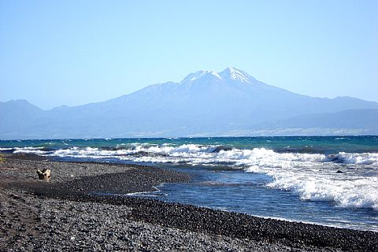
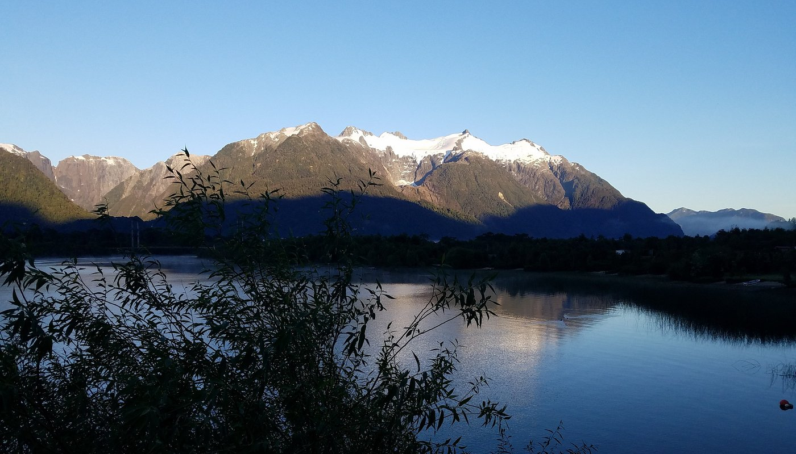

LAKE LLANQUIHUE
Nestled in the Los Lagos Region, Lake Llanquihue is Chile’s second-largest lake and a premier destination for sport fishing. Its clear waters are home to rainbow trout, brown trout, and Chinook salmon, making it a favorite among anglers seeking both accessibility and impressive catches. With the snowcapped Osorno Volcano rising dramatically in the background, fishing here combines adventure with postcard-perfect scenery, while nearby towns like Puerto Varas offer charming accommodations and cultural experiences to round out the trip.

LAKE YELCHO
Located in the Aysén Region of Patagonia, Lake Yelcho is renowned for its trophy-sized rainbow and brown trout, attracting anglers from around the world. Surrounded by glaciers, lush forests, and rugged mountains, the lake offers a pristine setting where fishing becomes both a sport and a journey into untouched wilderness. Whether casting from the shore or exploring by boat, visitors are rewarded with not only exceptional fishing opportunities but also breathtaking natural beauty that makes Lake Yelcho a true gem of Chilean sport fishing